Some examples using the tools in this distribution.
Contents
- Load an image, and downsample to a size appropriate for the machine speed.
- Synthetic images.
- Point operations (lookup tables):
- histogram Modification/matching:
- Convolution routines:
- Compare speed of convolution/downsampling routines:
- Display image and extension of left and top boundaries:
- Multi-scale pyramids
- A Laplacian pyramid:
- Wavelet/QMF pyramids:
- Steerable pyramid:
- Steerable pyramid, constructed in frequency domain:
Load an image, and downsample to a size appropriate for the machine speed.
oim = pgmRead('einstein.pgm'); tic; corrDn(oim,[1 1; 1 1]/4,'reflect1',[2 2]); time = toc; imSubSample = min(max(floor(log2(time)/2+3),0),2); im = blurDn(oim, imSubSample,'qmf9'); clear oim;ShowIm: 3 types of automatic graylevel scaling, 2 types of automatic sizing, with or without title and Range information.
help showIm
RANGE = showIm (MATRIX, RANGE, ZOOM, LABEL, NSHADES ) Display a MatLab MATRIX as a grayscale image in the current figure, inside the current axes. If MATRIX is complex, the real and imaginary parts are shown side-by-side, with the same grayscale mapping. If MATRIX is a string, it should be the name of a variable bound to a MATRIX in the base (global) environment. This matrix is displayed as an image, with the title set to the string. RANGE (optional) is a 2-vector specifying the values that map to black and white, respectively. Passing a value of 'auto' (default) sets RANGE=[min,max] (as in MatLab's imagesc). 'auto2' sets RANGE=[mean-2*stdev, mean+2*stdev]. 'auto3' sets RANGE=[p1-(p2-p1)/8, p2+(p2-p1)/8], where p1 is the 10th percentile value of the sorted MATRIX samples, and p2 is the 90th percentile value. ZOOM specifies the number of matrix samples per screen pixel. It will be rounded to an integer, or 1 divided by an integer. A value of 'same' or 'auto' (default) causes the zoom value to be chosen automatically to fit the image into the current axes. A value of 'full' fills the axis region (leaving no room for labels). See pixelAxes.m. If LABEL (optional, default = 1, unless zoom='full') is non-zero, the range of values that are mapped into the gray colormap and the dimensions (size) of the matrix and zoom factor are printed below the image. If label is a string, it is used as a title. NSHADES (optional) specifies the number of gray shades, and defaults to the size of the current colormap.
clf; showIm(im,'auto1','auto','Al')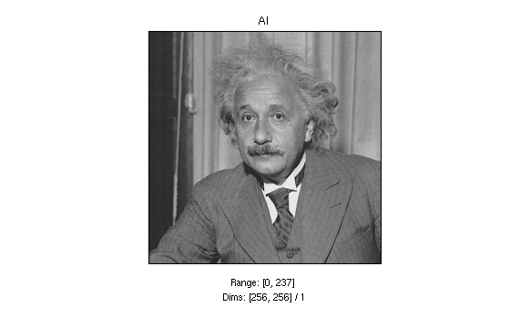
ans =
0 237
clf; showIm('im','auto2')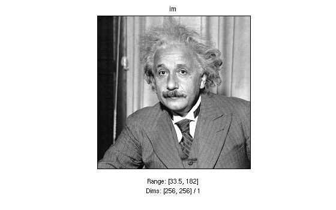
ans = 33.5299 181.9745
clf; showIm(im,'auto3',2)
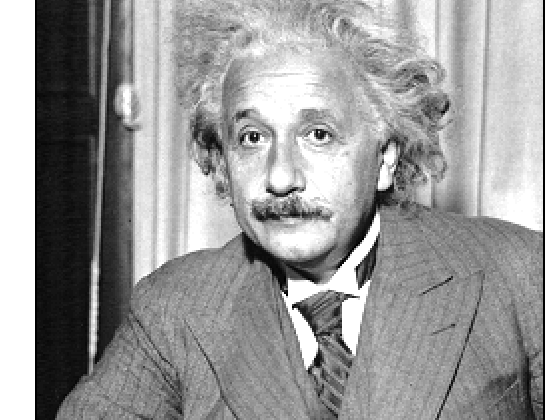
ans = 34.5314 161.4488Statistics:
mean2(im) var2(im) skew2(im) kurt2(im) entropy2(im) imStats(im)
ans =
107.7522
ans =
1.3772e+03
ans =
-0.3853
ans =
3.4430
ans =
6.8841
Image statistics:
Range: [0.000000, 237.000000]
Mean: 107.752213, Stdev: 37.111143, Kurtosis: 3.442999
Synthetic images. First pick some parameters:
sz = 200; dir = 2*pi*rand(1) slope = 10*rand(1)-5 int = 10*rand(1)-5; orig = round(1+(sz-1)*rand(2,1)); expt = 0.8+rand(1) ampl = 1+5*rand(1) ph = 2*pi*rand(1) per = 20 twidth = 7
dir =
5.0015
slope =
-4.3516
expt =
1.1006
ampl =
5.2370
ph =
2.5244
per =
20
twidth =
7
clf; showIm(mkRamp(sz,dir,slope,int,orig));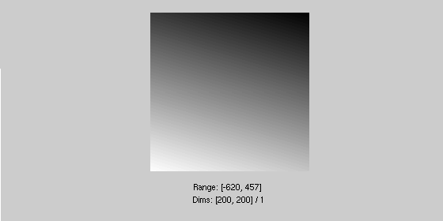
showIm(mkImpulse(sz,orig,ampl));

showIm(mkR(sz,expt,orig));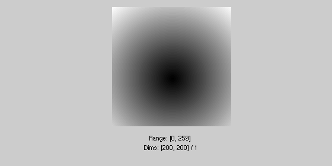
showIm(mkAngle(sz,dir));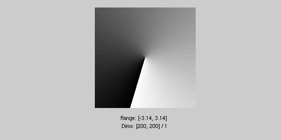
showIm(mkDisc(sz,sz/4,orig,twidth));

showIm(mkGaussian(sz,(sz/6)^2,orig,ampl));

showIm(mkZonePlate(sz,ampl,ph));
showIm(mkAngularSine(sz,3,ampl,ph,orig));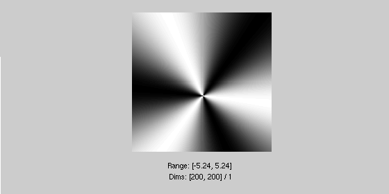
showIm(mkSine(sz,per,dir,ampl,ph,orig));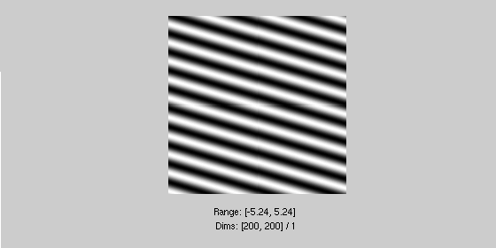
showIm(mkSquare(sz,per,dir,ampl,ph,orig,twidth));

showIm(mkFract(sz,expt));

Point operations (lookup tables):
[Xtbl,Ytbl] = rcosFn(20, 25, [-1 1]); plot(Xtbl,Ytbl); showIm(pointOp(mkR(100,1,[70,30]), Ytbl, Xtbl(1), Xtbl(2)-Xtbl(1), 0));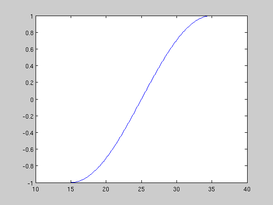 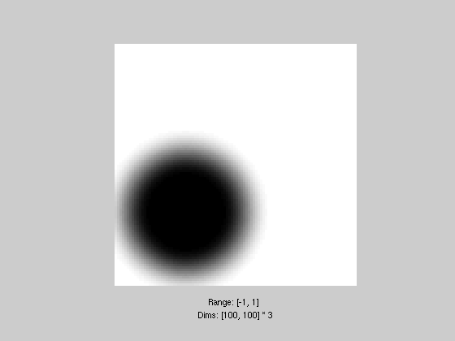
histogram Modification/matching:
[N,X] = histo(im, 150); [mn, mx] = range2(im); matched = histoMatch(rand(size(im)), N, X); showIm(im + sqrt(-1)*matched); [Nm,Xm] = histo(matched,150); nextFig(2,1); subplot(1,2,1); plot(X,N); axis([mn mx 0 max(N)]); subplot(1,2,2); plot(Xm,Nm); axis([mn mx 0 max(N)]); nextFig(2,-1);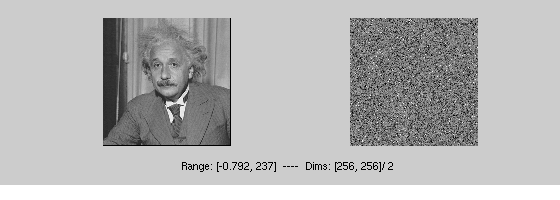
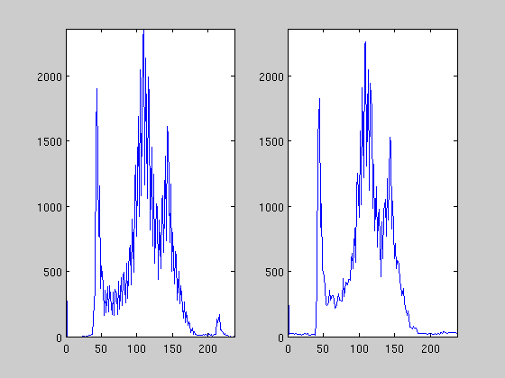
Convolution routines:
Compare speed of convolution/downsampling routines:
noise = rand(400); filt = rand(10);
tic; res1 = corrDn(noise,filt(10:-1:1,10:-1:1),'reflect1',[2 2]); toc;
tic; ires = rconv2(noise,filt); res2 = ires(1:2:400,1:2:400); toc;
imStats(res1,res2)
Elapsed time is 0.047516 seconds. Elapsed time is 0.445268 seconds. Difference statistics: Range: [-2.486900e-14, 2.842171e-14] Mean: 0.000000, Stdev (rmse): 0.000000, SNR (dB): 302.015673
Display image and extension of left and top boundaries:
fsz = [9 9]; fmid = ceil((fsz+1)/2); imsz = [16 16]; % pick one: im = eye(imsz); im = mkRamp(imsz,pi/6); im = mkSquare(imsz,6,pi/6); % pick one: edges='reflect1'; edges='reflect2'; edges='repeat'; edges='extend'; edges='zero'; edges='circular'; edges='dont-compute'; filt = mkImpulse(fsz,[1 1]); showIm(corrDn(im,filt,edges)); line([0,0,imsz(2),imsz(2),0]+fmid(2)-0.5, ... [0,imsz(1),imsz(1),0,0]+fmid(1)-0.5); title(sprintf('Edges = %s',edges));
Multi-scale pyramids (see pyramids.m for more examples, and explanations):

A Laplacian pyramid:
[pyr,pind] = buildLpyr(im); showLpyr(pyr,pind);

res = reconLpyr(pyr, pind); % full reconstruction imStats(im,res); % essentially perfect
Difference statistics: Range: [-1.110223e-16, 1.110223e-16] Mean: 0.000000, Stdev (rmse): 0.000000, SNR (dB): 328.192949
res = reconLpyr(pyr, pind, [2 3]); %reconstruct 2nd and 3rd levels only
showIm(res);
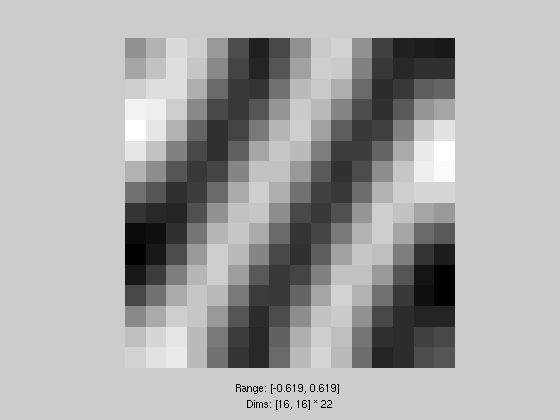
Wavelet/QMF pyramids:
filt = 'qmf9'; edges = 'reflect1'; filt = 'haar'; edges = 'qreflect2'; filt = 'qmf12'; edges = 'qreflect2'; filt = 'daub3'; edges = 'circular'; %[pyr,pind] = buildWpyr(im, 5-imSubSample, filt, edges); [pyr,pind] = buildWpyr(im, 'auto', filt, edges); showWpyr(pyr,pind,'auto2');

res = reconWpyr(pyr, pind, filt, edges); clf; showIm(im + i*res); imStats(im,res);
Difference statistics: Range: [-1.419542e-11, 1.515488e-11] Mean: 0.000000, Stdev (rmse): 0.000000, SNR (dB): 225.129905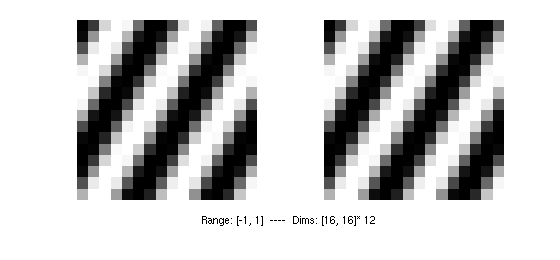
res = reconWpyr(pyr, pind, filt, edges, 'all', [2]); %vertical only clf; showIm(res);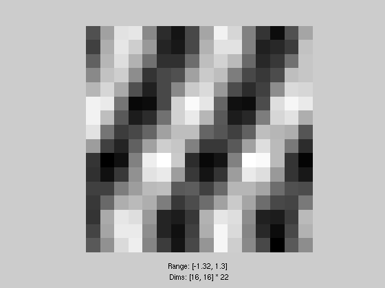
Steerable pyramid:
%[pyr,pind] = buildSpyr(im,4-imSubSample,'sp3Filters'); [pyr,pind] = buildSpyr(im,'auto','sp3Filters'); showSpyr(pyr,pind);

Steerable pyramid, constructed in frequency domain:
%[pyr,pind] = buildSFpyr(im,5-imSubSample,4); %5 orientation bands [pyr,pind] = buildSFpyr(im); %5 orientation bands showSpyr(pyr,pind); res = reconSFpyr(pyr,pind); imStats(im,res);
Difference statistics: Range: [-1.176482e-05, 1.176482e-05] Mean: -0.000000, Stdev (rmse): 0.000006, SNR (dB): 102.665681